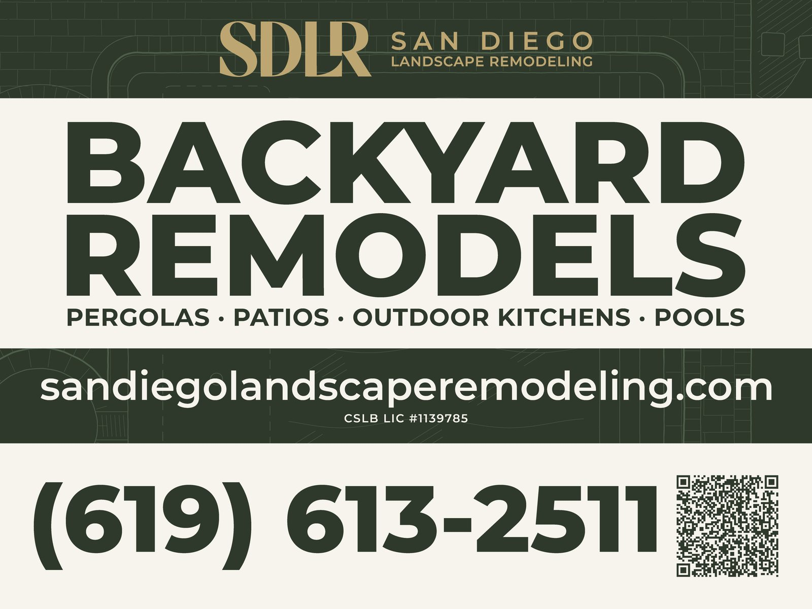
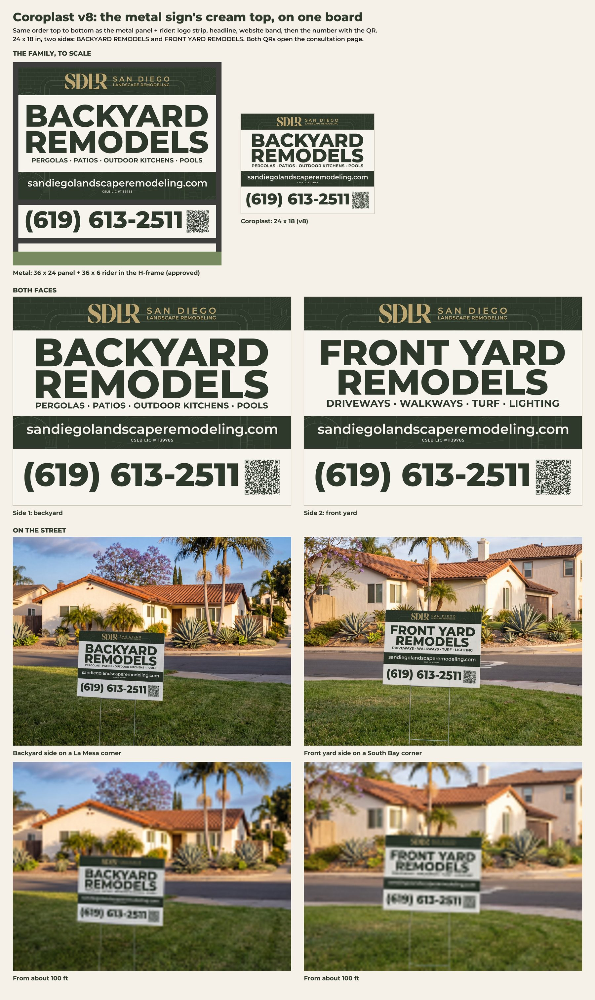

San Diego Landscape Remodeling · Coroplast yard sign · Version 8
The metal sign's cream top, on one board
Gio picked the cream top for the metal sign, so the coroplast now follows it exactly. Top to bottom it's the same order as the metal panel with its rider: the Forest logo strip, the cream headline, the Forest website band, then the number with the QR. BACKYARD REMODELS on one side, FRONT YARD REMODELS on the other.
Your callOK to make this the final coroplast? Print-ready. Not ordered.

What's on every face
Logo strip: the gold logo on Forest #2E382B with the site-plan texture, like the metal panel.
Headline in Forest on cream: BACKYARD REMODELS (2.4 in capitals) with pergolas · patios · outdoor kitchens · pools, or FRONT YARD REMODELS (2.15 in) with driveways · walkways · turf · lighting.
Website in cream across a Forest band at 0.82 in capitals, nearly the full width (it was 0.55 in on Version 7), with the CSLB licence. No QR in this band, the same change Gio asked for on the metal sign.
Number + QR on cream, like the metal rider: (619) 613-2511 at 1.94 in capitals and a 3 in QR to the Contact page to book a consultation. Each side has its own tag so we see which one gets scanned. CALL OR TEXT is off, as on the metal sign.
The one trade-off: a 24 in board runs out of width before height, so with the QR beside it the number is 1.94 in instead of Version 7's 2.16 in. It still reads at 100 ft in the street test.
Next to the metal sign, and on the street

Top: the approved metal set (36 × 24 panel + 36 × 6 rider in the H-frame) and the coroplast, to the same scale. Bottom rows blur the whole scene to what a driver with 20/30 eyes sees from about 100 ft: the headline and the number still read.
Print spec
Same as Version 6: 24 × 18 in, 4 mm coroplast, double-sided with different art front and back (page 1 = backyard, page 2 = front yard), flutes vertical for a wire H-stake, blockout board, CMYK with Forest #2E382B. Prices and the placement note are on Version 6.
The layered Illustrator master (two artboards), 300 dpi JPGs and the README are in Drive under
02 Clients/san-diego-landscape-remodeling/assets/print-ready/yard-signs/2026-11-21-24x18-coroplast/print-files-v8/. Versions 1–7 are kept.